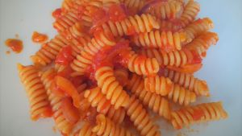

Pasta al pomodoro
Ingredienti
Di seguito gli ingredienti per il piatto, per 1 persona
- 80/100gr di pasta
- 1 conserva pomodoro
- 1 scalogno
- Dado per salare
Procedimento
Preparazione ingredienti
- Tritare la cipolla
Procedimento
- Mettere olio in una padella antiaderente far arrivare a calore
- Aggiungere la cipolla, mescolare frequentemente
- Quando la cipolla è rosolata aggiungere conserva di pomodoro.
- Mantenere il sugo mescolato.
- Aggiungere la pasta.
Servire il piatto